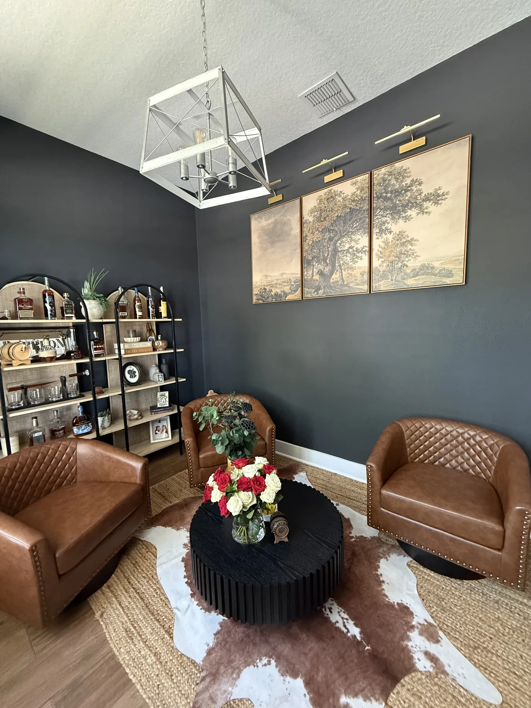
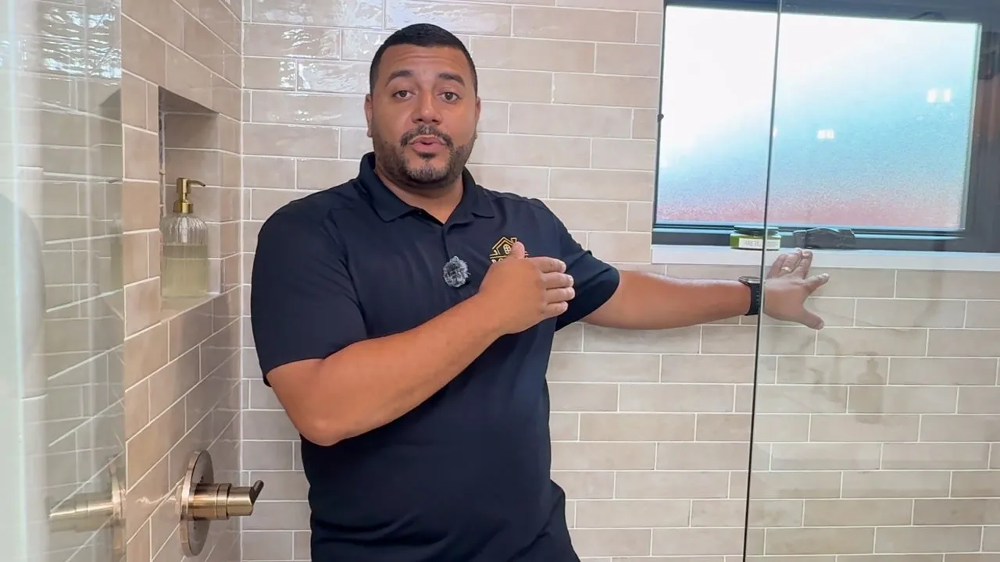
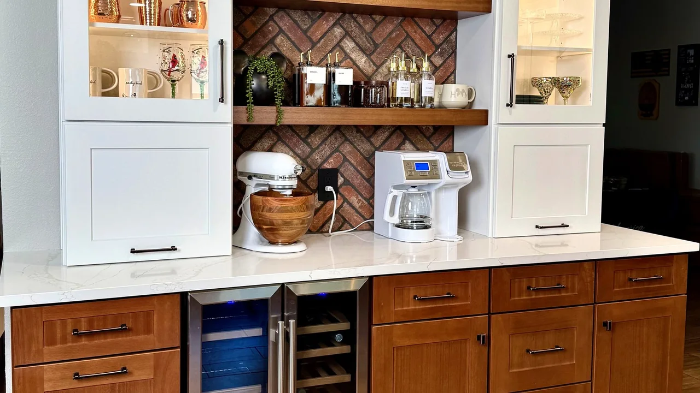
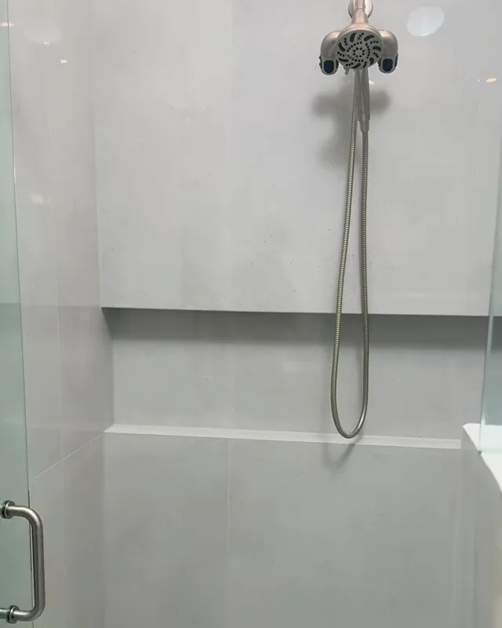
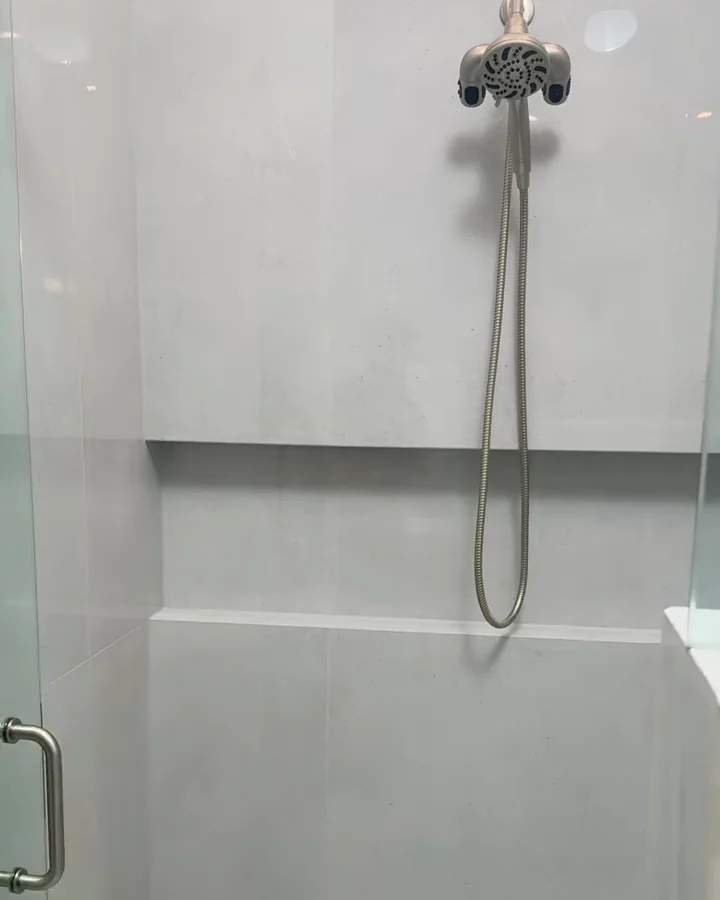

14+
Years of remodeling
experience
experience

Kitchen, bathroom and flooring remodeling across Orange, Seminole, Osceola and Lake counties, designed and built by one team.

Mike Posada · On site in Dr. Phillips, Orlando
Posada is a family-operated kitchen and bath design and remodeling studio in Casselberry, Florida. From there we design and build across greater Orlando: Orange and Seminole counties first, with Osceola and Lake counties beyond them.
Wherever your home is, the project is handled the same way: a complimentary in-home consultation, an itemized written proposal, and our own team on site with Mike overseeing the work.
Choose your city for the kitchen or bathroom page written for that area. Orlando itself is covered on our main kitchen and bathroom pages.
Orlando and the communities around it, from Winter Park to Winter Garden.
Our home county, north of Orlando, with the design studio in Casselberry.
Apopka, Maitland, Winter Springs, Clermont, Sorrento, Mount Dora, Eustis, DeLand, DeBary, Deltona, Geneva, Horizon West, Gotha, Oakland and Minneola.
Short walkthroughs of real Posada projects, explained by Mike. A kitchen in Orange County, a bathroom in Lake County, the same standard of finish.

Play · 8 minOrange County · Coffee bar, pot filler and smart storage


Play · 3:38Lake County · Full walkthrough
The address changes; the way we work does not. One team designs, prices and builds your remodel, and every project carries a three-year labor and installation warranty with complete written terms before you sign.
Veteran-owned · Family-operated · Fully insured, certificate on request · BBB Accredited, A rating
A complimentary in-home design consultation anywhere in our service area. We listen first, then put honest numbers on it.
Call or text · We reply within 24 hours